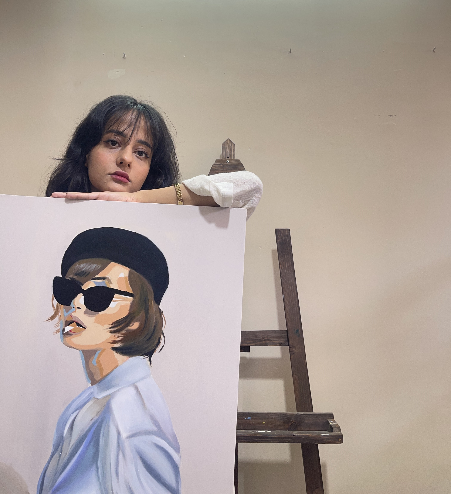
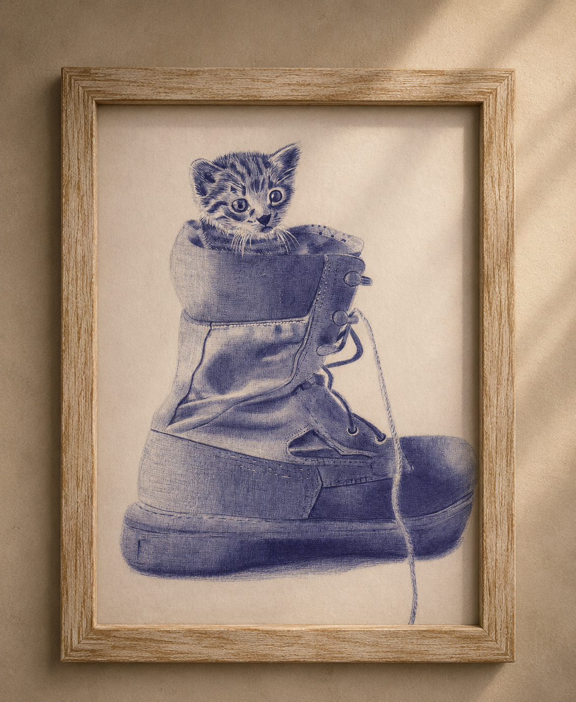
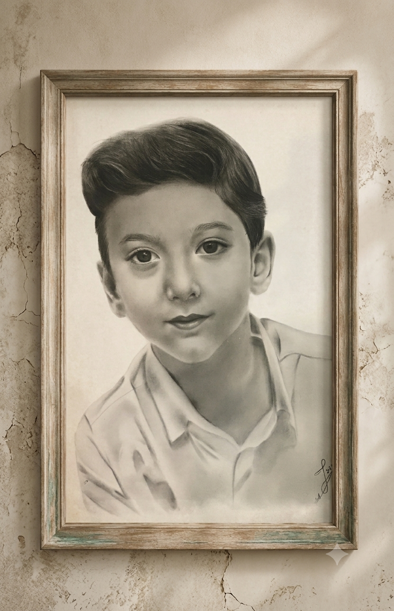
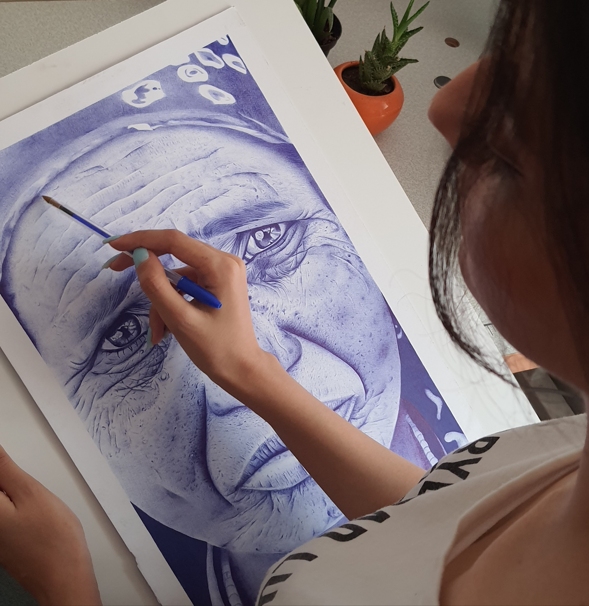
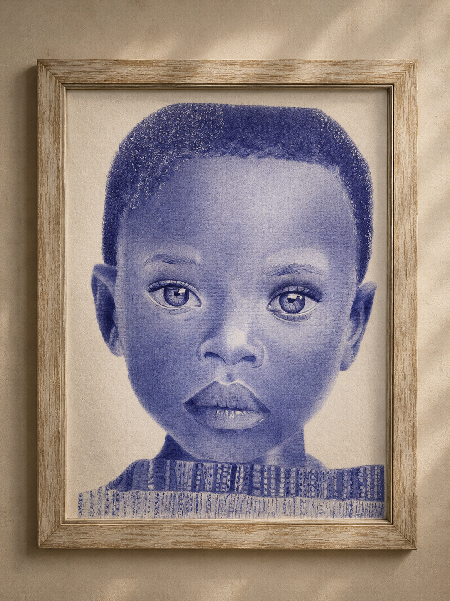
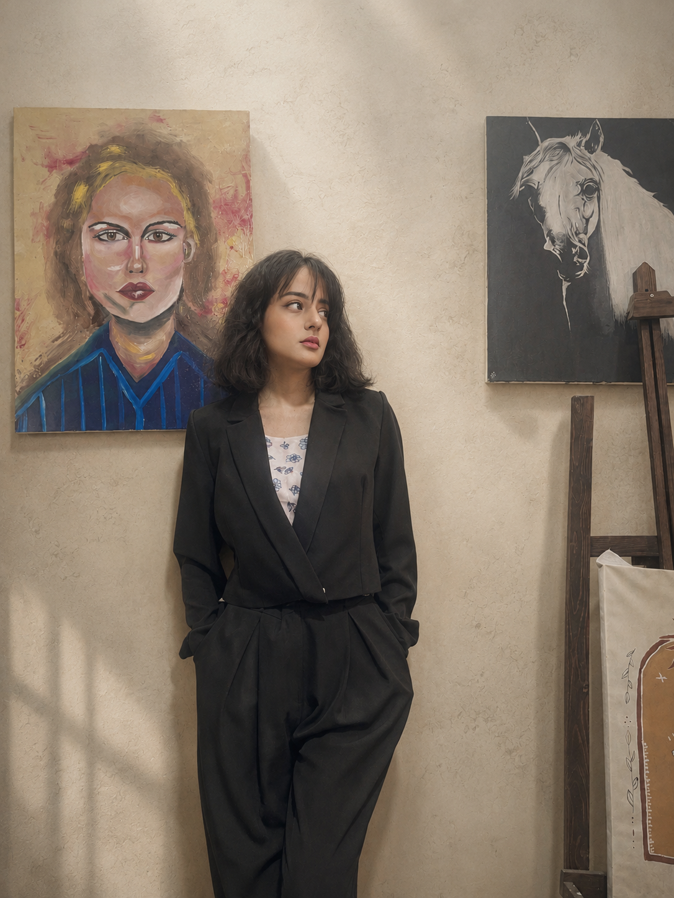

Our story

I’m Mehrnaz, a traditional artist with around a decade of experience. My work primarily focuses on drawing with a ballpoint pen—an everyday tool that I’ve developed into a serious medium for creating detail and form. In my practice, I aim to create a balance between the roots of traditional art and a contemporary perspective. Alongside this, I’m interested in exploring the intersection of art and technology, and how these two spaces can come together to create new experiences. My artistic path is shaped by this combination—somewhere between past and present, tradition and innovation
Ballpoint
Realism
→

Echo of Senses



در اندرون منِ خستهدل ندانم کیست که من خموشم و او در فغان و در غوغاست
حافظ
این قفس چون دلِ من تنگ و تاریک شدهست چه کنم، راهِ رهایی ز کجا باید جست
مولانا



These three commissioned pieces represent evolution to me—a process through which one comes to understand the need for others in order to grow, improve, and become more complete.